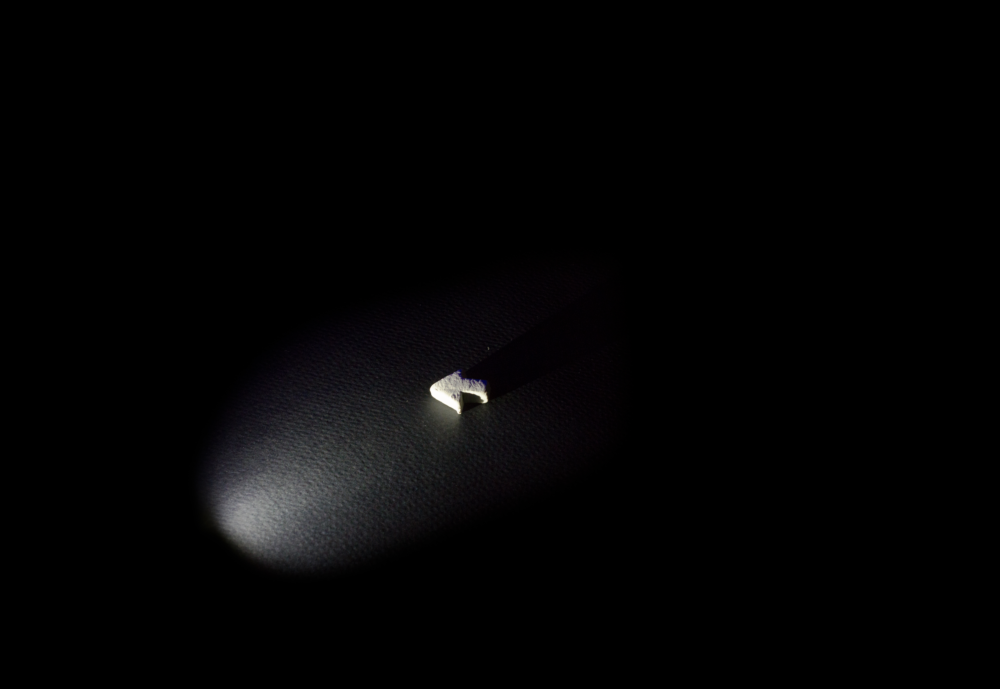
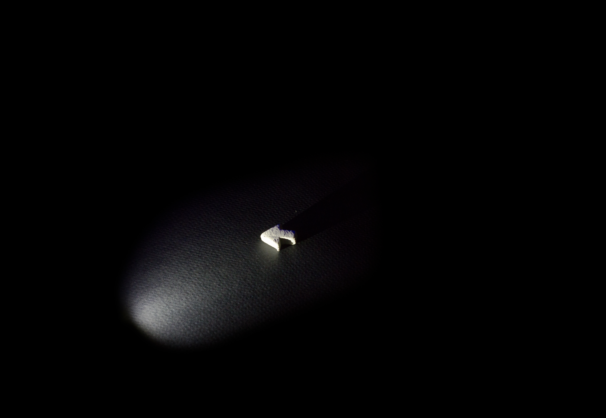

writer
“Essay About Allie” 2016
I've taken a couple of breaks from restaurant work to write movies full-time, for as long as my savings would allow. The first of those breaks began with me moving to Chicago, in 2015. I had exactly one friend in the city when I moved: Allie. We were longtime theatre and dumb-youtube-video-making companions. Our weekly outings to coffee shops, movies, or open mics were a valuable resource in my fight against loneliness and complacency. It wasn't long before I decided to write something for the two of us. Aware of Allie's standing incredulity and proud, populist tastes, I told her it would be called “Gus and Allie’s Superfuntime Comedy Hour”.
Very often, creative work can send you headfirst into a storm of emotional baggage. There was a lot riding on this: my capacities as a writer, my friendship with Allie, my fear of being alone. I began making broad, exciting plans to distract myself from the impossible situation I'd created. As I was writing pages for "Superfuntime", I decided there really should be three films. I came up with names for them, I outlined them. Combined, they would deal with the limits of the film medium, with nature of perspective, with the intricate truths of my friendship with Allie. When I had completed my first draft of "Superfuntime" it was perfectly competent, but not compelling - it wasn't really about any of these things. A bit defeated, I put the project to bed, still having not done justice to the pressing questions I'd unearthed.
I applied to a college - six months later - called Deep Springs. One of their essay prompts read: “describe your relationship with one other person in your life”. With the pressure of my own impositions gone, I wrote something about Allie. When I was done, I felt satisfied. I realized that without even one thought of paying homage to my elaborate plans, I had satisfied the creative impulse that brought them about.
A PDF of the essay.
Perhaps, with a more robust emotional and creative skill set, I'll give "Superfuntime" another go. But, more pressing are the projects I know how to finish. One such project is "El Bandido Blanco" - a jaunty cartoon short about an honorable Mexican bandit - who is incidentally, a dog. Presently, I'm realizing it as a comic book.
A PDF of the illustrated screenplay.